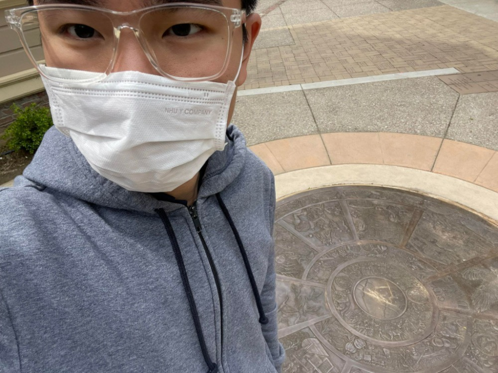

The most interesting thing about the seal is the texture around the center shows different historical stories and typical places of Davis City.
This recalls me about a Vietnamese musical instrument - Dong Son drum from long time ago that has a similar design that shows daily activities and customs in the past.